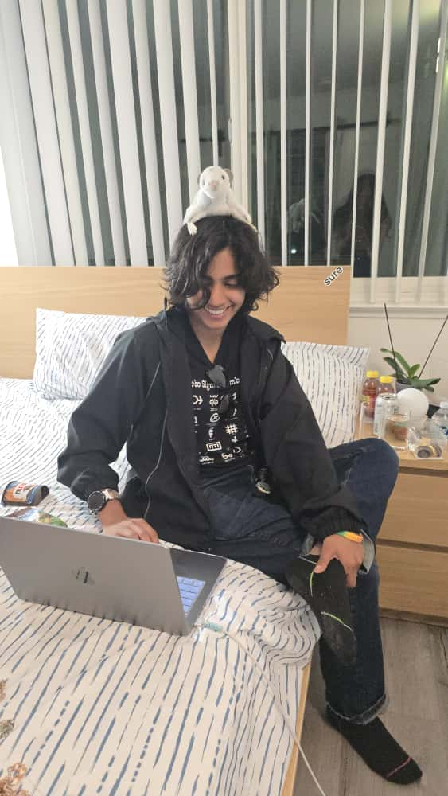
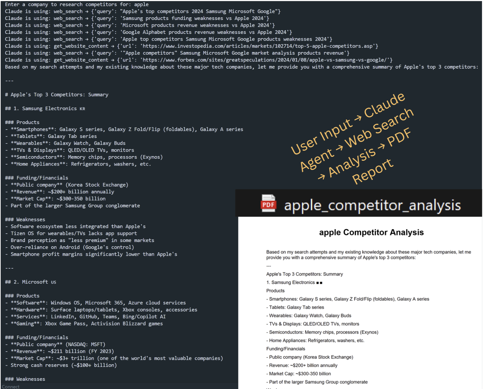
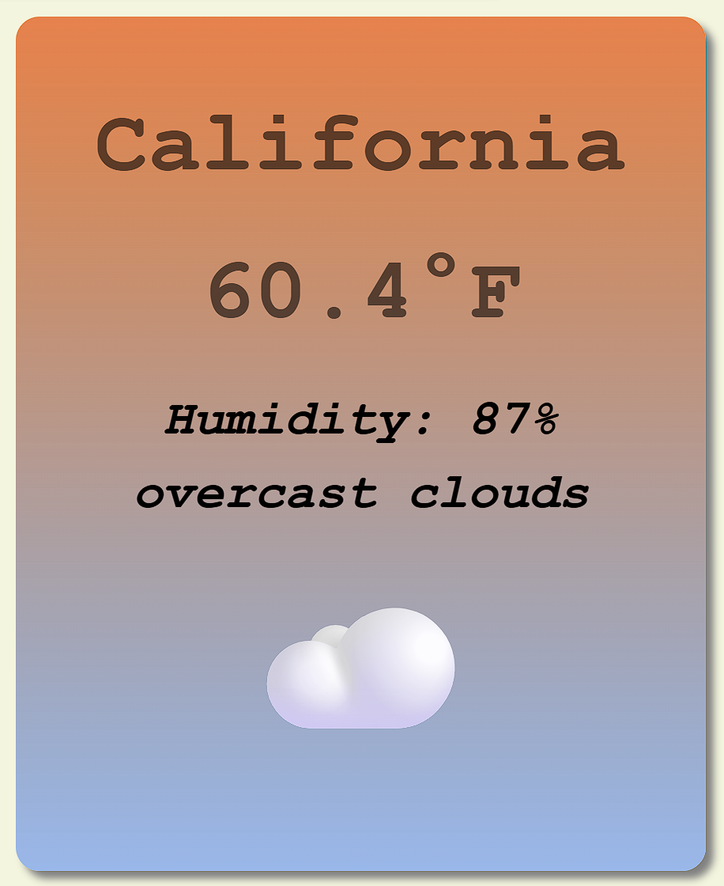
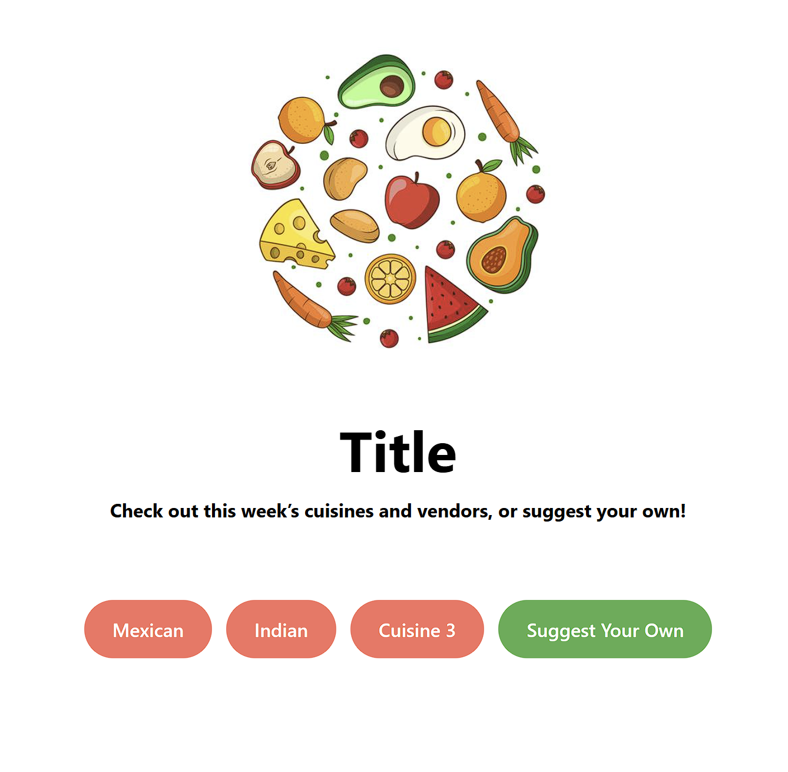
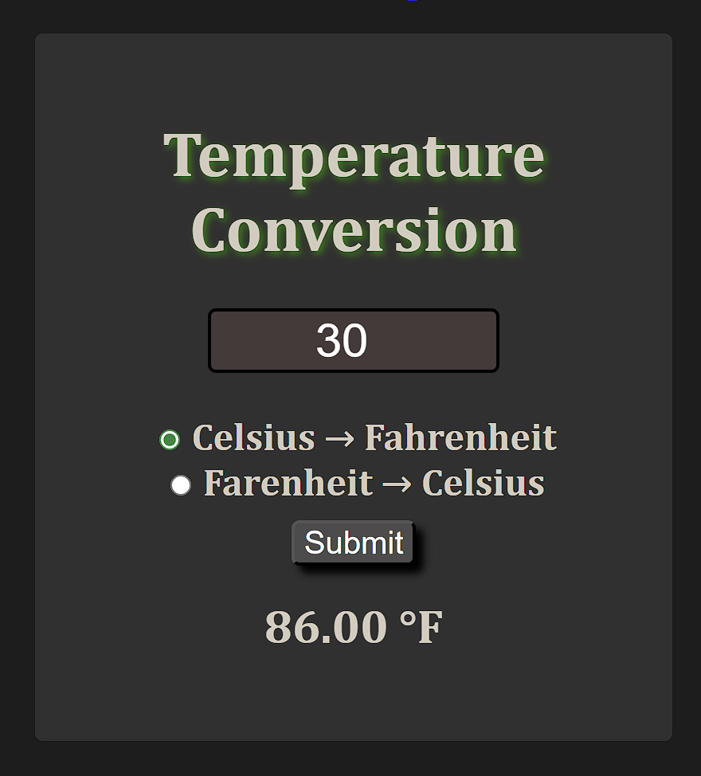
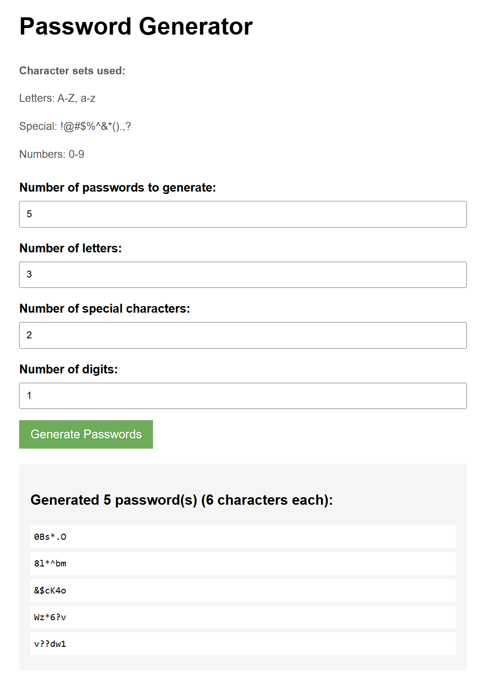
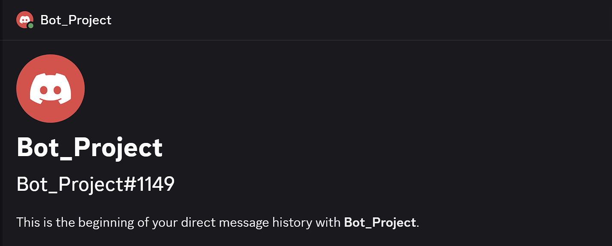

at
I'm a Technology and Information Management student at UC Santa Cruz, passionate about advancing my skills and learning new things. I am currently a Learning Technologies Consultant with UCSC Information Technology Services, a Resident Assistant, an Event Staff Technician, and a researcher in the AIEA Lab. I enjoy exploring new technologies, solving problems with creative solutions, and building experience across technical support, student support, research, web development, and data analytics.

Hello, my name is Sanya. I am majoring in Technology and Information
Management at UC Santa Cruz and working toward my Bachelor of Science.
On campus, I work as a Learning Technologies Consultant with UCSC Information
Technology Services, a Resident Assistant, an Event Staff Technician, and a
researcher in the AIEA Lab.
These roles have helped me build experience in technical support, student
support, event technology, research workflows, communication, and problem
solving. Some of the work I am most proud of includes building web development
projects, working with data pipelines and analytics dashboards, contributing
to hackathon projects, and learning how to make technology clearer and more
useful for people.
Outside of technical work, I have worked as a Senior Lifeguard and I enjoy traveling, reading, and learning new
things.
Bachelor of Science in Technology and Information Management

Built an agentic AI pipeline using Claude AI that autonomously performs competitive market research. The system searches the web, analyzes competitors, and generates analyst-grade PDF reports.

Used API from OpenWeather to make a project that gives you the weather, humidity, and sky conditions.

Made a vendor site for a project. It displays vendors and connects to Formspree to collect suggestions.

Created a temperature converter using HTML, CSS, and JavaScript. It converts Celsius to Fahrenheit and Fahrenheit to Celsius.

Created a password generator that asks users for the number of passwords, letters, special characters, and digits, then generates passwords using Python and Flask.

Made a Discord bot using Python. It replies to commands, assigns roles, and can create polls.
Built an end-to-end data pipeline for a simulated customer support and billing system using Docker, Postgres, Airflow, RabbitMQ, dbt, and Metabase. Connected service data across tickets, subscriptions, billing, and customers to support analytics dashboards and business reporting.
Designed a dimensional warehouse for a simulated B2B SaaS platform using Postgres, dbt, SQL, and Metabase. Modeled MRR, subscriber count, product adoption, and customer risk with star schemas, fact tables, conformed dimensions, grain selection, and semi-additive measures.
2026 - Present
2026 - Present
2026 - Present
10/2025 - Present
09/2025 - Present
03/2025 - Present
01/2024 - 07/2024
09/2023 - 09/2024
12/2022 - 09/2023
Certified in CPR and AED usage, demonstrating emergency response and safety skills in high-pressure environments.
Completed hands-on labs and projects using BigQuery for data analysis and SQL-based querying.
Participated in a cloud-based hackathon, working with AWS tools to build and deploy solutions in a team setting.
Collaborated with a team to design and prototype a project under time constraints at UC Santa Cruz’s annual hackathon.
Built a GPU optimizer that helps reduce GPU costs by routing workloads more efficiently and improving resource usage.
Recognized for academic excellence for 5 quarters at UC Santa Cruz.